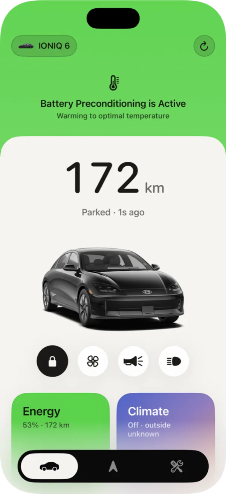
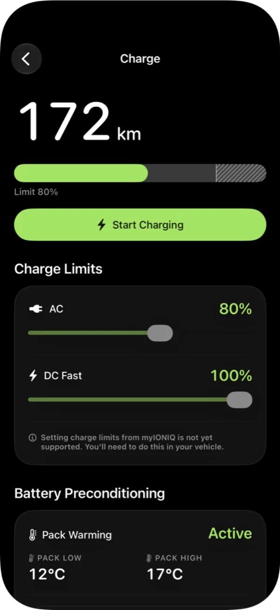
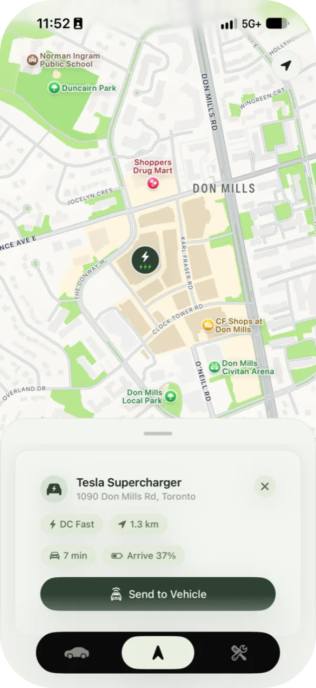
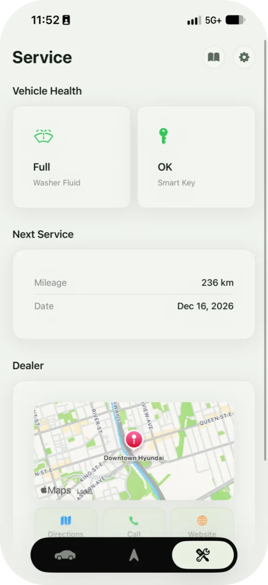
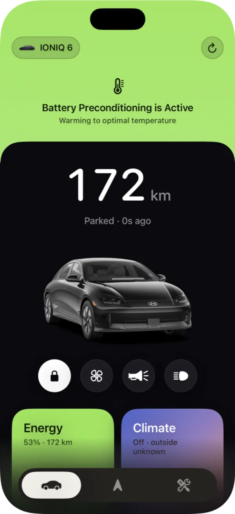
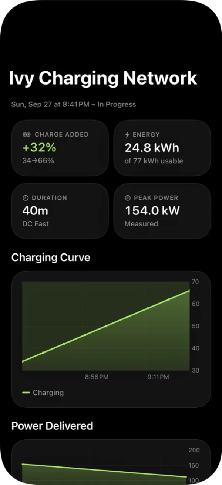

myIONIQ
For Hyundai and Kia e-GMP EVs, on iPhone, CarPlay and Apple Watch.




Remote Services
Lock, climate, charging, horn and lights through Bluelink, from anywhere.
At a Glance
- ●Range, charge, lock and climate, with your car drawn in its actual paint colour.
- ⚡︎Lock, climate, horn and lights a tap away, each confirmed with Face ID.
- ◐A status band takes over the top of the screen while a charge or battery warm-up is running.
- ↻Every reading shows its source and age: Bluelink or the car itself, and how long ago.

Charge History
With the OBD-II adapter connected, myIONIQ records the charge every minute, including real charge power, and turns those readings into sessions with a curve, energy added, time taken and peak power.
- ∿Charges you missed still get filed, inferred from the readings on either side.
- →Sessions carry on even if you walk away from the car halfway through.
- ⏱Live Activities keep the session on your Lock Screen and Dynamic Island.

CarPlay Navigation
Routes and live traffic from Mapbox, with lane guidance and signals. Long trips get charging stops sized to what each leg actually needs, not a flat 80%. myIONIQ learns the routes you prefer and where you tend to go, and a route planned on your phone can be sent to the car with its charging stops intact.

Charging Stops
Stops are picked from Open Charge Map, and each one charges only as much as the next leg needs, not a flat 80%.
Favourite Routes
Remembers the way you actually drive somewhere and offers it first, even when it isn't the fastest.
Suggestions
Suggests your likely destination when you get in, based on the time and where you usually go.
Lanes and Incidents
Shows every lane ahead and highlights the ones you need, and warns you about crashes, closures and construction on your route.
Cluster and HUD
Puts turn arrows, street names and lanes on the instrument cluster and head-up display, not just on the CarPlay screen.
Preconditioning
Warms the battery automatically on the way to a DC fast charger so it charges at full speed. You can also start it yourself, no route needed.
Vehicle Telemetry
The battery answers on the OBD-II port, while the cluster and head-up display take their packets from behind the head unit. Reaching both needs two adapters on two different buses.
OBD-II Adapter
Required for CarPlayAny Bluetooth LE ELM327, in the OBD-II port
- Live charge and charge power
- Minute-by-minute charge curves
- Trip energy and efficiency
- Door, lock and battery state without API calls
Harness Adapter
OptionalThe Ioniq5_CAN harness, behind the head unit
- Battery preconditioning on demand
- Auto-warm before DC fast charging
- CarPlay directions on the cluster
- Lanes and streets on the HUD
Basic OBD Sync
Live state of charge, real charge power, door and lock state, battery temperature and per-trip regen, read every minute while you're with the car.
Requires a Bluetooth LE OBD-II adapter
Battery Preconditioning
Warms the high-voltage battery on the way to a DC fast charger, even on a CarPlay route, so the car takes full power at the plug.
Requires the Ioniq5_CAN harness running my WiCAN firmware fork
Cluster and HUD Directions
Turn arrows, distance, street names and lane guidance from a CarPlay route, drawn on the instrument cluster and the head-up display.
Requires both adapters and a myIONIQ route in CarPlay


Themes
Five palettes, light and dark.
Chalk
Bright and neutral
Sage
Soft green
Clay
Warm sand
Mist
Cool blue-grey
Midnight
Dark
Beyond the App
- ◼︎Live Activities on the Lock Screen, in the Dynamic Island and in CarPlay.
- ▦Home Screen and Lock Screen widgets with one-tap controls.
- ⌚︎An Apple Watch app for status and commands from your wrist.
- ⌘Shortcuts for common commands, and walk-away locking over Bluetooth.

TestFlight Early Access
myIONIQ is heading to TestFlight in small waves. You'll need an iPhone on iOS 27 or later and a Bluelink account. An OBD-II adapter unlocks CarPlay and live charging.